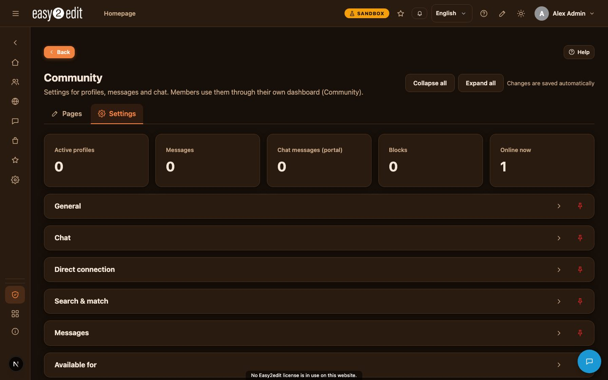

8. Community, marketplace, agenda, documents and games
easy2edit offers a set of plugins that turn your site into a full community platform. Members can build a profile, meet other members, trade on a marketplace, plan appointments, share documents and play games. This chapter explains what each part does and how they fit together.
Video: Community and marketplace (English voice-over also in Nederlands)

Community overview#
The Community plugin brings together everything needed for a community or dating site:
- Profile pages with photos
- A member finder, with the option to block other users
- Search and matching tools: liking, favorites and visitors
- Messages between members
- Chat and direct connections (WebRTC) using a code, link or QR code
Profiles can use profile themes, custom profile fields and "available for" options, so you can tailor the community to your audience, whether that is a sports club, a dating site or a business network.
When parts of the community require a subscription or a donation, the Community plugin works together with the Abonnementen (Subscriptions) plugin to handle access and payment.
Profile themes#
Profile themes define which fields, visibility options and search filters appear on a profile. easy2edit comes with ready-made theme packages:
- Sporters
- Dating
- Business
- Webshop
You can install or remove these themes, or create your own with custom fields, visibility settings and search filters. The superadmin decides which themes administrators and users are allowed to choose. Themes can be exported and imported as JSON files, which makes it easy to reuse or share a theme between sites.
Profiles and blocking#
Each member gets a personal profile page that can show multiple photos. Visibility of the profile, and of individual fields, can be set per language and per group. The member finder lets users search for other members, and users can block other members if they do not want to be contacted.
Search and matching#
The discover function works like a dating site: members can search with filters, see recommendations, like other members, build matches, save favorites and see who has visited their profile.
Messages and chat#
Members can send each other private messages through the built-in messaging system (postvak).
Chat can run in a popup or in a full screen, either through the portal or directly between members using WebRTC. Chat supports photos, videos and video calls.
Direct connection#
Direct connect sets up a direct WebRTC connection between two people, even without an account. The connection is made with a code, a link or a QR code, and supports chat, photos, videos and video calls. The feature is available on the pages /directconnect and /direct.
Marketplace#
On the marketplace, members can offer products, services or other items for sale. Each listing can use a theme and include images, and can be set up as:
- A fixed price
- Bidding, starting from a minimum price
- A booking, such as an appointment or registration for an event
Bids placed on an item are visible to all members, so the marketplace works in an open and transparent way.
Agenda#
The agenda plugin gives both users and groups their own calendar. It supports:
- Personal appointments
- Appointments with other members, including invitations, confirmations or proposing a different time
- Group appointments
- Events created by administrators, which can be placed on pages as a system object
The agenda includes reminders, notifications and a tile on the dashboard, so members stay informed about upcoming appointments and events.
Document management#
Documents can be uploaded into a folder structure, with tags, version history and access rights per user or group. Files are stored on the server or on S3, and can be encrypted for extra protection. Blocks are available to display documents directly on pages.
Games#
The games hall gives members access to a selection of games. Each game is its own package, either a folder or a zip file containing a game.json file, placed in the games folder of this plugin. Every game has its own configuration for administrators and its own settings per member. Games run in a protected environment and store scores and progress. Ranked leaderboards are supported, and an example game is included to show how the system works.
Age, country and gambling checks#
For sites that need it, easy2edit offers age verification (18+), country checks and a gambling popup (24+). These checks only apply to the target audiences where they are required or desired.
The settings for these checks are found under Admin > Security. Note that the popups and country check only work when this plugin is switched on.